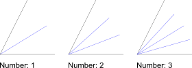

- Scegliere il
tipo di riga desiderato nella barra
degli strumenti delle opzioni.
- Nella barra degli strumenti delle opzioni immettere la lunghezza
dell'bisettro (o degli bisettori), partendo dal punto di intersezione delle due
linee. Nella seconda casella di testo selezionare il numero di assi angolari
che si desidera creare. Il valore predefinito è '1', ma è anche possibile
creare più bisettrici come mostrato qui:

- Fare clic sull'entità di prima linea che limita l'angolo.
- Fare clic con il cursore del mouse sulla seconda entità di linea da cui si
desidera creare gli biseteri angolari. L'anteprima mostra gli bisettrici prima
della loro creazione.